THE SHADOW OF THE DARK LORD
Bound by the Dark Mark, the Death Eaters are a group of dark wizards who serve Lord Voldemort. Terrorizing the wizarding world with curses, manipulation, and death, they seek to overthrow the Ministry of Magic, subjugate Muggles, and enforce pure-blood supremacy.
CHARACTERS OF THE GROUP

LORD VOLDEMORT
Tom Marvolo Riddle, who assumed the name Lord Voldemort, stands as one of the most powerful and dangerous dark wizards in history. Born to a dying Muggle mother and a wealthy pure-blood wizard father, Riddle's early life was marked by abandonment and rage. His obsession with immortality led him to create Horcruxes, fragmenting his soul across multiple objects in a desperate attempt to become deathless.
Voldemort's psychopathy and absolute lack of empathy made him a terrifying tyrant. His two reign periods saw widespread genocide of Muggle-borns and those who opposed his vision of a wizarding world purified through blood supremacy. His death marked by his own rebounded curse demonstrated the ultimate irony: the man who sought immortality through dark magic died through the very love magic he despised, destroyed by the sacrifice of a mother's protective charm.
BELLATRIX LESTRANGE
Bellatrix Black Lestrange was Voldemort's most fanatical and devoted lieutenant, a woman of considerable dark magical talent whose sadistic cruelty and unhinged devotion made her uniquely terrifying even among Death Eaters. Her obsessive love for Voldemort transcended normal loyalty, becoming an almost religious fanaticism. She participated in some of the war's most heinous atrocities, torturing the Longbottoms into permanent madness and murdering countless innocents.
Bellatrix's decade in Azkaban did nothing to diminish her commitment to the Dark Lord's cause. Upon her release, she immediately rejoined Voldemort's ranks, her insanity seemingly enhanced rather than diminished by imprisonment. In her final confrontation with Molly Weasley, she met her end, killed by the love-fueled wrath of a mother protecting her family—an ironic death for someone who had dedicated her life to serving someone utterly incapable of love.
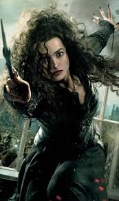
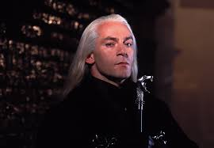
LUCIUS MALFOY
Lucius Abraxas Malfoy was a Death Eater of considerable influence whose wealth and pure-blood connections made him powerful within dark wizard circles. However, unlike Bellatrix's fanatical devotion, Lucius's loyalty to Voldemort was fundamentally pragmatic and self-serving. His political maneuvering and attempts to gain power through Ministry corruption demonstrated his ambition to use Voldemort's regime as a means to personal advancement.
Lucius's failure to obtain the Prophecy led to his fall from Voldemort's grace. His attempt to manipulate events through his son Draco backfired catastrophically, and by the war's end, Lucius sought to save his family at any cost, ultimately escaping serious punishment. His arc represents the opportunistic nature of many Death Eaters—less ideological fanatics than power-hungry individuals attracted to Voldemort's promise of supremacy.
NARCISSA MALFOY
Narcissa Black Malfoy occupied a unique position as a member of both the Dark Lord's inner circle and a protective mother. Despite her family's pure-blood supremacist ideology and her association with Death Eater ideology, Narcissa's love for her son Draco transcended political loyalty. When forced to choose between her son's survival and service to Voldemort, she chose family without hesitation.
Narcissa's deception of Voldemort at the Battle of Hogwarts—telling him that Harry was dead when in fact Harry survived—represented a profound betrayal of the Dark Lord. Yet her motivation was not political rebellion but maternal protection. Her actions demonstrate that even those raised in pure-blood supremacist ideology could be redeemed through love and the bonds of family.
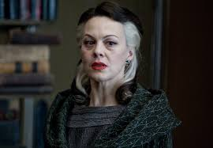
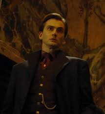
BARTY CROUCH JR.
Barty Crouch Jr. was a Death Eater of genuine fanaticism whose devotion to Voldemort approached religious fervor. Escaping Azkaban through his mother's sacrifice, he undertook an extraordinarily dangerous mission: impersonating the legendary Auror Alastor Moody for an entire school year to position Harry Potter for capture. His meticulous attention to detail and unwavering commitment to his mission demonstrated his competence despite his obvious insanity.
Crouch Jr.'s torture at the hands of Dementors in Azkaban left him psychologically shattered, yet he remained loyal to Voldemort beyond sanity. When exposed, he refused to betray his master even facing death, maintaining his fanatical devotion to the end. His capture of Harry and delivery to Voldemort at the graveyard cemetery changed the course of the war, demonstrating how a single devoted individual could alter the trajectory of history.
REGULUS BLACK
Regulus Arcturus Black was Sirius's younger brother who followed the family's pure-blood ideology into Death Eater service. However, unlike his sister Bellatrix, Regulus retained moral capacity. When Voldemort used him for his personal purposes without regard for his life—forcing him to drink poison as part of a Horcrux protection test—Regulus's blind loyalty transformed into determined rebellion.
Regulus stole the Locket Horcrux from Voldemort, sacrificing his own life to destroy it and weaken his master. His act of defiance, performed alone with no hope of recognition or survival, demonstrated profound moral courage. The house-elf Kreacher's devotion to protecting Regulus's secret honor cemented his legacy as the one Death Eater who ultimately chose justice over loyalty to the Dark Lord.
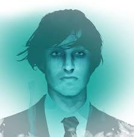
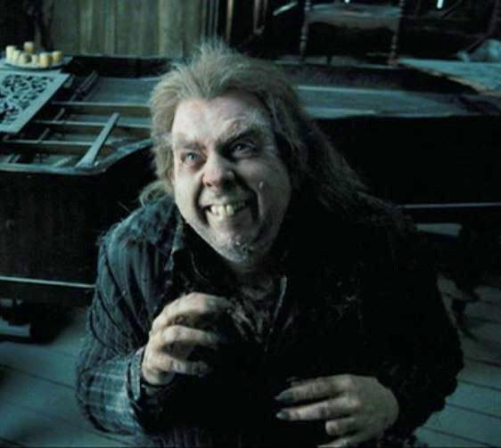
PETER PETTIGREW
Peter "Wormtail" Pettigrew was the traitor who brought about the downfall of the Potter family. A skilled wizard masking his abilities behind an appearance of weakness and inadequacy, Peter was motivated by fear and resentment. When faced with Death Eaters' wrath, he betrayed his closest friends and fellow Marauders to save his own skin, an act of cowardice that irrevocably altered wizarding history.
Peter's twelve years hiding as a rat, Scabbers, while Ron Weasley carried him unknowingly, was the ultimate humiliation. His resurrection of Voldemort through dark ritual demonstrated his continued servility to the Dark Lord. Yet even Peter eventually rebelled—when pressed to kill Harry, his previous master, his hand turned against him, provided as payment for saving Harry's life years before. His death demonstrated that even the most despicable could find moments of redemption.
FENRIR GREYBACK
Fenrir Greyback was not a true Death Eater but rather a savage werewolf retained as a mercenary weapon by Voldemort. His depravity transcended even typical Death Eater cruelty. He deliberately infected children with lycanthropy, creating an army of young werewolves while destroying their lives. His predatory nature and complete lack of humanity made him uniquely dangerous even among Voldemort's servants.
Greyback's mercenary relationship with Voldemort lacked even the pretense of ideology. He served purely for the opportunity to indulge his savage nature and predatory instincts. During the Battle of Hogwarts, he was ultimately captured and subdued, his reign of terror ended by the combined forces of those he had terrorized.
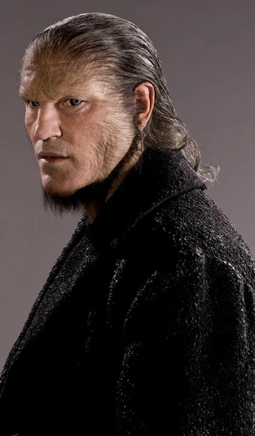
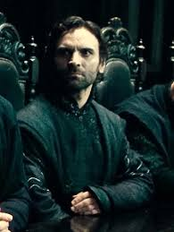
ANTONIN DOLOHOV
Antonin Dolohov was a proficient and dangerous Death Eater known for his innovative and devastating magical attacks. His mastery of silent curses and his ability to improvise deadly spellwork made him a feared opponent to Aurors and Order members alike. His participation in both wizarding wars demonstrated his enduring commitment to Voldemort's cause.
Dolohov's technical magical skill and ruthless application of dark magic made him a valuable asset to Death Eater operations. However, his dedication to Voldemort's cause ultimately proved futile when defeated at the Battle of Hogwarts, demonstrating that even skilled dark wizards could not prevail against the united resistance of those fighting for freedom.
YAXLEY
Yaxley was a high-ranking Death Eater who achieved significant power within Voldemort's government apparatus, particularly through his infiltration and control of Ministry functions. His collaboration in the systematic persecution of Muggle-borns demonstrated his ideological commitment to pure-blood supremacy. His position at the Ministry gave him access to sensitive information and the ability to enforce Dark Lord policies from within government.
Yaxley's reach into the Ministry's highest offices made him instrumental in transforming it into an instrument of oppression. However, his power proved ephemeral—after Voldemort's defeat, his Ministry position became a liability, marking him as a collaborator with an illegal regime. His arrest and imprisonment represented the fall of the dark government he had helped construct.
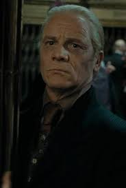
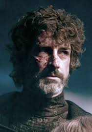
AUGUSTUS ROOKWOOD
Augustus Rookwood was a spy of considerable cunning whose position within the Department of Mysteries gave him access to some of the wizarding world's most closely guarded secrets. His espionage work provided Voldemort with valuable intelligence about magical research, protective enchantments, and classified government operations. His betrayal of Ministry secrets represented a fundamental breach of trust and security.
Rookwood's long career as a spy for Voldemort demonstrated his patience and commitment to the cause. However, his exposure during the Ministry's fall marked the end of his freedom. His imprisonment reflected the consequences faced by those who betrayed their own government and people for service to dark magic.
RODOLPHUS LESTRANGE
Rodolphus Lestrange was Bellatrix's husband and her partner in crime, though his fanaticism never quite matched her unhinged devotion to Voldemort. Together with his brother-in-law Rabastan and his wife, Rodolphus participated in the torture of the Longbottoms, applying the Cruciatus Curse repeatedly until their minds shattered beyond repair.
Rodolphus's criminal career brought him to Azkaban alongside his wife. Unlike Bellatrix, who maintained her sanity and devotion despite imprisonment, Rodolphus appears to have been diminished by captivity. His fate post-war remains less celebrated than his wife's dramatic final duel, perhaps reflecting his lesser commitment to Voldemort's ideology.
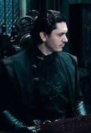
RABASTAN LESTRANGE
Rabastan Lestrange was Rodolphus's brother and another participant in the Longbottom torture incident. His career as a Death Eater was less prominent than his wife's, yet his involvement in torturing Aurors demonstrated his commitment to Dark Lord's cause and his willingness to inflict extreme suffering for ideological purposes.
Rabastan's imprisonment in Azkaban alongside his brother reflected his participation in war crimes. His fate post-war aligned with many Death Eaters—imprisonment and permanent social stigma—marking him as a collaborator with evil and a torturer of those dedicated to justice.
SCABIOR
Scabior was a leader of the Snatchers, a group of opportunistic wizards who hunted Muggle-borns and marked individuals for reward money offered by the Dark regime. Though not a formal Death Eater, Scabior's work furthered Voldemort's persecution agenda while allowing him to profit personally. His capture of Harry Potter and his friends demonstrated his effectiveness at his despicable work.
Scabior's career as a Snatcher exploited the chaos and fear created by Voldemort's government. His pursuit of profit rather than ideology made him adaptable to circumstances, yet ultimately dispensable to Voldemort's cause. His overpower during the Battle of Hogwarts marked the end of one of the regime's most visible instruments of persecution.
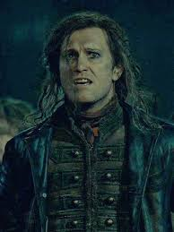
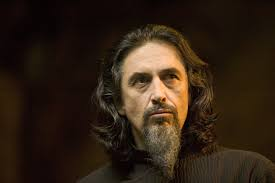
IGOR KARKAROFF
Igor Karkaroff was a Death Eater whose commitment to Voldemort proved far less steadfast than his outward loyalty suggested. When facing Azkaban imprisonment after the Dark Lord's first fall, Karkaroff betrayed his comrades, providing evidence against fellow Death Eaters in exchange for his own freedom. His survival through betrayal demonstrated both his pragmatism and his moral cowardice.
As Durmstrang Headmaster, Karkaroff maintained his outward respectability while secretly serving Voldemort again during his second reign. However, his history of betrayal made him vulnerable. Recognizing this liability, Voldemort had him killed, demonstrating that betrayal of the Dark Lord carried ultimate consequences. His death exemplified the fate awaiting those who attempted to serve two masters.
EVAN ROSIER
Evan Rosier was an early Death Eater who participated in the First Wizarding War with considerable magical skill and dangerous potent dark magic. His combat effectiveness earned him the respect of both allies and opponents, including the legendary Auror Alastor Moody. Rosier's battles against Ministry Aurors demonstrated his magical prowess and commitment to Voldemort's cause.
Rosier's death during the First Wizarding War marked one of the casualties that ultimately led to Voldemort's initial defeat. His encounter with Moody left the Auror permanently scarred, a visible reminder of the intensity of the magical war. Rosier's death represented one of many losses sustained during the first conflict.
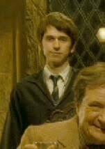
WILKES
Wilkes was a Death Eater during the First Wizarding War who participated in Voldemort's violent terrorist campaigns against Muggle-borns and Order members. Though not as individually prominent as some Death Eaters, Wilkes represented the collective force of Voldemort's followers, each contributing to the reign of terror that characterized the first war years.
Wilkes's death at the hands of Aurors during magical combat demonstrated the resistance mounted by Ministry forces against Voldemort's followers. His elimination, along with many similar Death Eaters, gradually weakened Voldemort's forces, contributing to the gradual momentum that eventually led to the Dark Lord's first fall. Individual deaths of committed Death Eaters accumulated into strategic defeats for Voldemort's regime.